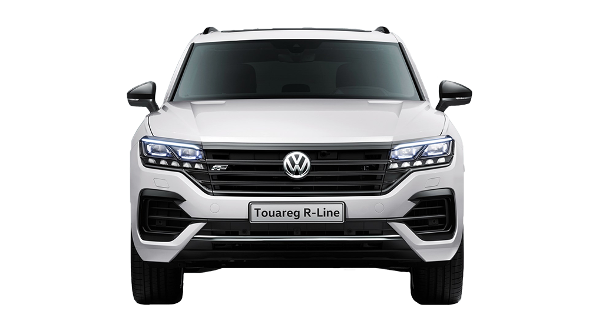
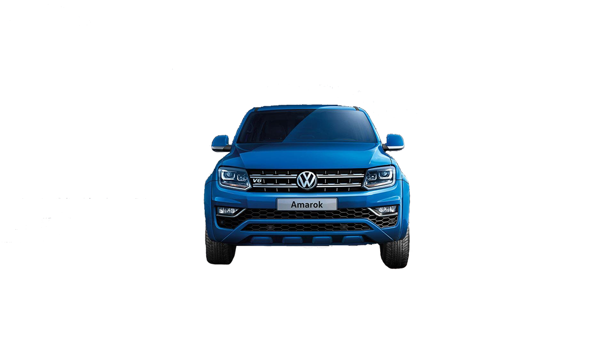
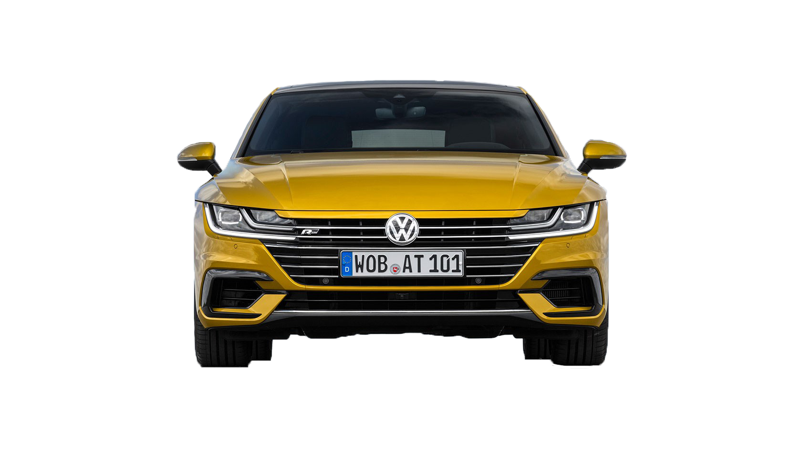
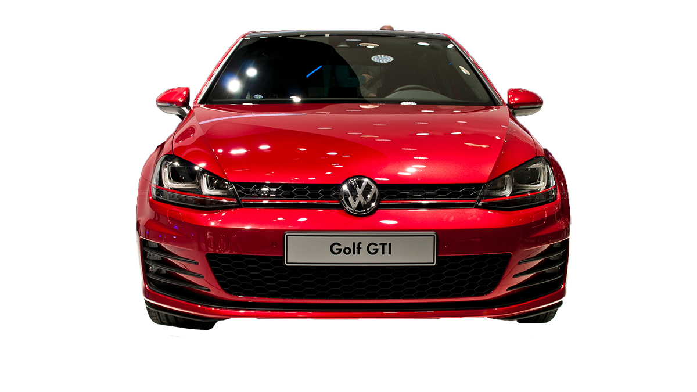
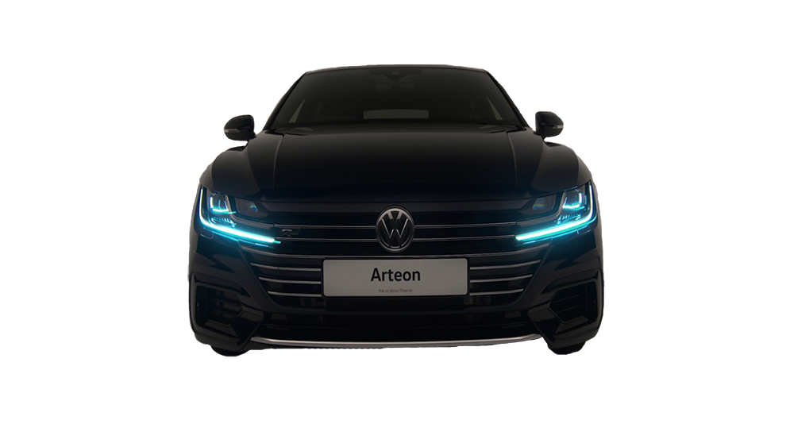

A NEW kind of leader.
The new Touareg
"The Touareg. See the world from a fresh perspective.
The Toureg's off-road capability will help find a way, even when there appears to be none. The 4MOTION wheel drive system distributes engine power, as required traction and propulsion on virtually all types of ground."

100% pickup . 100% premium.
The Amarok .
"The Amarok is eye-catching from any angle, with its wide
stance and rugged appearance combined with powerful
engines, strong chassis and superb interior styling. The
chiselled contours and styling highlights exude quality and
style, beautifully complemented by the striking rear design,
making it as much at home for the family as it is at work."

A NEW ERA OF VOLKSWAGEN DESIGN, ARTEON
The roofline slopes downward and merges seamlessly with the back, conveying style and performance.
The standard and available features on the Arteon help explain why it's justifiably called a premium sedan. Within the plush and spacious interior is a long list of things that delight both driver and passenger.

OFTEN COPIED , NEVER EQUALED.
A legendary look that's always in style.
With available LEDs front and back and sports bumpers, the best way to describe the Golf GTI is jusy really, really cool.
The Golg-GTI is designed to provide confidence as well as convenience with Front Assist and App-Connect

OFTEN COPIED,
NEVER EQUALED.
The roofline slopes downward and merges seamlessly with the back, conveying style and performance.
The standard and available features on the Arteon help explain why it's justifiably called a premium sedan. Within the plush and spacious interior is a long list of things that delight both driver and passenger.